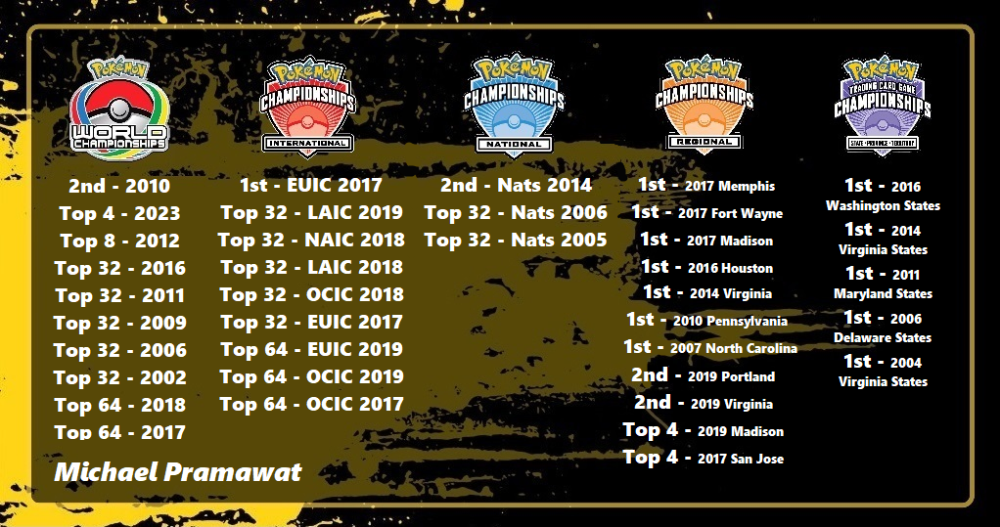
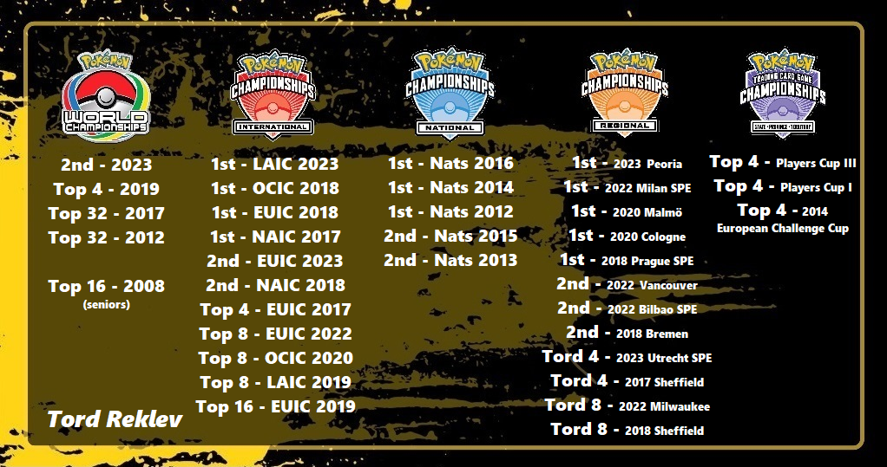

Quite often, I hear players arguing over who the best player in the world is, and I mean, often... Local events, messenger chats, friends at work, and on social media. This has always been a hot topic throughout the game's lifetime, but never more so than throughout the last few years. I recently indulged in one of these conversations with friends after the conculsion of the 2023 World Championships, and really started thinking hard on who I believe to be the five best players of all time are.
As a reminder before we delve too deep into this, these rankings are of my opinion. You do not have to agree with me, however I do hope that some of the points and information I include in this article are useful when you are thinking of your own Top "x " list. (NOTE: I am leaving players from the Asia-Pacific region out of this list's consideration. With the vastly different and secluded circuit they compete in, it's incredibly difficult to compare accomplishments to the Play! Pokémon structure that we're more familiar with. I can think of so many players from this region that are among some of the best players of all time, ex. Takuya Yoneda, Shintaro Ito, Tsuguyoshi Yamato, Yuta Komatsuda, Sejun Park, Ryota Ishiyama, Daichi Shimada and so many more. But, without knowing what other accomplishments these players have had in their own circuits outside of the World Championships, it's very difficult for me to include them in my Top 5 list.) With that out of the way, let's get into it.
The Top 5 Greatest Players in History! From 5th to 1st:
5. Azul Griego
@Azul_GGFresh off of a Top 4 finish at the 2023 World Championships, Azul is one of the strongest players this game has ever seen, and we are actively watching him continue to grow as one of the best players of all time!
I know that this choice may already turn some of you retro heads away, given that most of his accomplishments are more recent, but hear me out. Azul has been playing the game for more than thirteen years and has not only made a name for himself as one of, if not the, top content creators in the game. But he won the very first Regionals he attended in 2010! He was destined to be a Champion from the beginning.
It took a few years afterwards for Azul to find his stride, but once he did, he has only continued to snowball into what I think, is the 5th best player in the game's history.
Let's take a look at just some of Azul's most notable accomplishments:
Again, that's just some of Azul's accomplishments... too many to add to the graphic above, absolutely insane.
He is most known as a two-time International Champion and five-time Regional Champion (the third most "winning-est" Regional Champion in history). But as you can see above, he made finals at another Internationals event and finals of three other Regionals. Only two other players have also won two Internationals each respectively, Gustavo Wada and Stéphane Ivanoff, and like Azul, Stéphane also made finals at a third Internationals. (Obviously not counting Tord Reklev, but trust me, we'll get to him later.) Now, both could be argued by many to have more accolades than Azul, like Gustavo winning the 2010 World Championships in the Senior Division. But, it's hard to ignore the amount of Regionals Azul has taken down in the US. Unfortunately for both Gustavo and Stéphane, the EU and LATAM regions have never had as many Regionals nor Special Events as in the US, esspecially LATAM. If so, it's quite possible that either would have more Regional/SPE titles on their records. But this is not a what-if list based on geography.
Prior to this year's World Championships, while close, I honestly don't think Azul would have been on my top 5 list. But after his Top 4 finish in Yokohama, and only having been just a knock out away from making finals, Azul is who I believe, to be the 5th best player in the history of Pokémon! And trust me when I say that we have not seen the last of him yet.
4. Igor Costa
@IgorDolbethIgor has more or less stepped away from the game in the last few years, but him having stopped traveling to events outside of New England does not take him out of consideration as one of the greatest players in the history of the game.
Before we look at his accomplishments, what if I told you that Igor made Top 4 at not one, not two, but three Worlds, AND nearly back to back... to back! That's almost as hard to believe as Jason Klaczynski having won three Worlds... but obviously not at all on the same level.
Igor is also one of very few players who have moved to the US from his own country of Portugal. Meaning his accomplishments spanned different countries throughout the years. Which is really cool to think about.
Let's take a look at some of Igor's most well-known accomplishments:
(Note: The purple "States" logo is simply being used here as an "other" category of sorts)
Igor is the 2012 World Champion, winning the event shortly after winning his home country's National Championships. By winning worlds, he of course earned an automatic invitation to the 2013 World Championships, but dropped from the event before the final round of swiss. But, Igor came back with vengeance, making finals again in the 2014 World Championships! Though he lost in the finals to Andrew Estrada in the Virizion Genesect mirror match, he made history by making Top 4 at the 2015 Worlds Championships the following year!
Very few players in the history of the game have made Top 8 at Worlds multiple times, but in the short amount of time in which Igor pulled it off is historic. After moving to the US around 2016, Igor began to dominate the North American circuit by winning three Regionals, making finals in a fourth, and making Top 8 in eight other Regionals. Not to mention his consistent placing at International events, and nearly winning one. For some time, he was arguably the best player in the world (that was actively playing at the time).
I have a friend who likes to argue with me that this spot should go to Shintaro Ito. As Shintaro is the only other World Champion to have made finals at Worlds more than once. (Not counting Jason Klaczynski of course.) Shintaro won the 2016 World Championships with the famous Mega Audino deck, and made finals again in the 2019 World Championships. While amazing accomplishments that 100% put Shintaro Ito in a place to be considered as one of the greatest players of all time, it's the fact that Igor also has an additional Top 4 placement over Shintaro that I believe gives Igor the edge here. Now, like I mentioned earlier in this article, it's very difficult to know what other accomplishments Japanese players may have. I've tried to research farther than what Shinataro's Limitless page lists, but with no luck. Though I'm unable to confirm what other accomplishments Shintaro may have on his record, with Igor's Regional accomplishments, I'm incredibly confident in believing that he is the fourth greatest player of all time.
3. Michael Pramawat
@MichaelPramawatPopularly know by his nickname, "Pram", Michael Pramawat is the most "winning-est" Regional Champion in history. Which kind of makes sense when you look at just how long he's been playing the game. I'll give you a hint, it rhymes with "since the beginning".
As one of the few players known for still playing the game today since the beginning of WOTC-era events without taking a break, Michael Pramawat is one of the most legendary players of all time!
As mentioned above, he made a name for himself after taking down Regionals title after Regionals title beginning in the mid-2000's. He was one of the most feared players in the game, almost gauranteed to stomp each and every opponent he faced. But prior to this year's 2023 World Championships, in which Pram finished 3rd Place, some newer players who began playing after covid may not have heard of him.
Let's get to know him by taking a look at his incredible accomplishments from throughout the years:
meep
2. Jason Klaczynski
Jason K, also known as "Ness", is THE historic three-time Pokémon TCG World Champion! A feat that may not ever be seen again, not in our lifetime, nor the next. I know what you're asking youself right now, "If Jason is the only player in the history of the game to have won multiple World Championships, why is he number two on the list?" Trust me, it's hard for me to accept this as well, so I'll explain as best as I can below.
Jason was one of the pioneers of the Pokémon TCG. Playing, and winning, many WOTC-era events in the late 90's and early 2000's. He was the most well-known player from the beginning, both IRL and online. Everyone read and talked about Ness' pojo and pokegym articles and decklists. Everyone wanted to meet him, shoot, everyone wanted to be him. (This still holds true today...)
Let's take a look into some of the accomplishments of the three-time World Champion:
As you can see, Jason has won nearly every type of event that has ever existed! But no other accomplishments speak louder than Jason being the three-time World Champion. What makes this feat even more mind-boggling, is that Jason had to fight his way through the last chance qualifier on multiple occasions, just to get the opportunity to compete in the World Championships. One of those years of which, were the 2013 World Championships, where Jason fought his way through the "grinder" (the last chance qualifier) and won his third Worlds title! Not only deeper solidifying his place as the only multi-time World Champion ever, but also being the first and only Masters division player to win Worlds after having qualified via the grinder.
Before winning Worlds in 2006 though, his journey had to start somewhere, and well, he was winning his first events too... Starting off at the 2000 Tropical Mega Battle, an invite-only event held in Hawaii. From there, Jason made top cut one after another at countless events. Eventually winning multiple Regionals and finally winning Nationals in 2015, of which Jason considered to be the final pillar for him to take down as a player.
Though he continued to play in events after winning Nats in 2015, one of which making finals of another Regionals in Houston. (With yours truly lossing to him in the Top 8 win-and-in.) I believe Jason felt that it was time he retired from the game and focus on life and poker, as he had lost interest in the game after it had evolved into a duller version of its past self. Though, Jason is still very much active in the Pokémon community, playing in and hosting retro events quite frequently. The most recent of which, not counting online events, was a retro weekend openly advertised in a mall in Florida. A bunch of people from around the world flew in to Florida just to spend time at his retro event. It was at this event, in which a certain matchup between two well-known players occured, that many people kept their eye on. Jason Klaczynski vs Tord Reklev.
It was at this event that Tord defeated Jason in the finals of Jason's own RS-PK format tournament. These two have become friends over the years, and have built a friendly rivalry between each other, as the two greatest players this game has ever seen.
They've been seen countless times playing old formats together, including on special youtube streams. Here's one. But please let it be known that these friendly bouts between them have nothing to do with where I rank them in this list, it's just simply amazing to see them play against each other to this day.
Jason has one of the coolest retro-catered websites, where he's written in detail many of his thoughts on multiple formats from WOTC Base Set on into the XY era. You can find all of his work here: jklaczpokemon.com/
And if you'd like to take a look back into the past, many of his old pojo articles are still preserved here: pojo.com
1. Tord Reklev
@TordReklevhi
hi
Let's look at just some of the accomplishments of the four-time International Champion:
